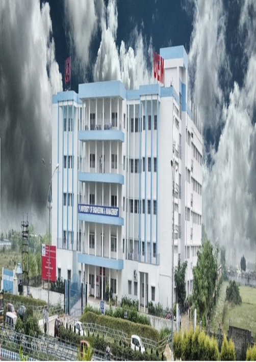

Add Ons
Here are some extra facts

UEM, Kolkata

UEM, Jaipur

A user-friendly website made for the ease of students and faculty members
Sign Up hereHere are some of the most important features of our portal
The students will be able to view their total attendance. They will also be abel to view the total number of classes of each subject attended and the number of classes which are required to be attended for a safe attendance score (around 75%). The students will also be able to view the important topics taught in a partcular class.
The students will be able to view or upload their portfolios here. The portfolio contains the details of the students. It contains the hobbies of the students, their skills and the companies they are interested to join. The portfolio section also helps the students to create their individual CVs which prove beneficial during the placements.
This section contains the emergency contact numbers of the students. For medically unfit students, this section has the emergency numbers of the nearby hospitals and the family doctors.
Here are some extra facts
Here are some of our Communities